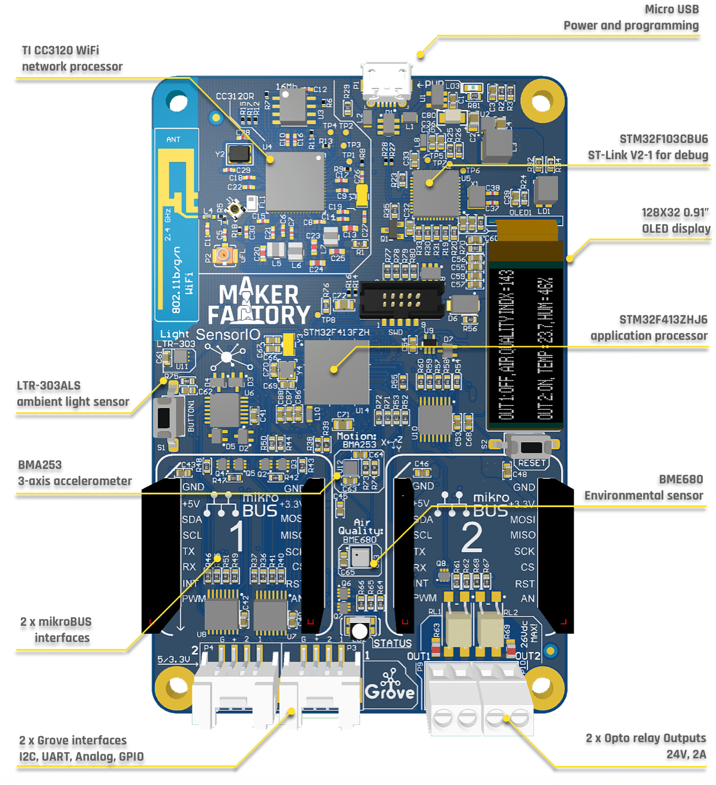
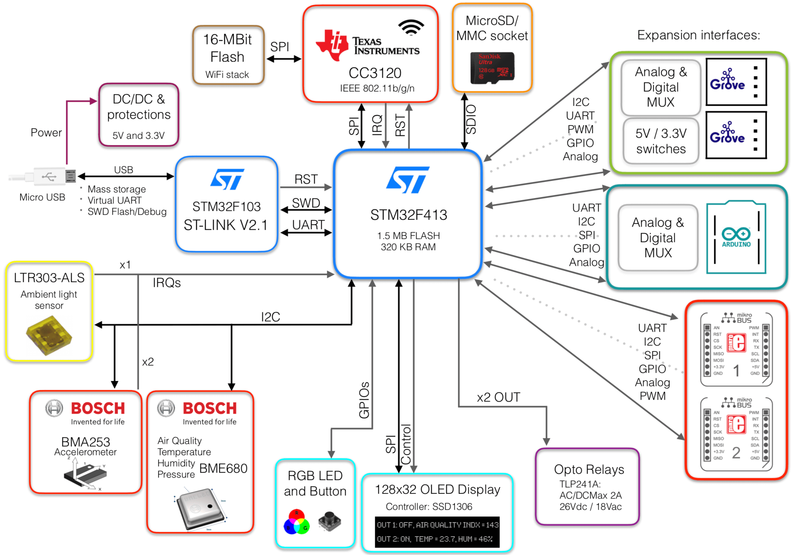

Hardware overview
Hardware description¶
In order to maximize the flexibility of use for different applications, all the expansion interfaces have software-configurable support for 3.3V and 5V boards, providing compatibility for more than 500+ different expansion boards available from various manufacturers.
The core of the SensorIO board is the ST-Micro STM32F413ZH, a powerful ARM Cortex®-M4 MCU with a very rich set of peripherals presented into a 144-balls 10x10mm BGA chip.


Features¶
This is an overview of the main components and features:
- STM32F413ZH MCU, ARM Cortex™-M4, 1.5 Mbytes of Flash memory, 320 Kbytes of RAM, FPU unit w/ DSP instructions, 125 DMIPS @ 100 MHz.
- WiFi: CC3120R SimpleLink® Wi-Fi 802.11b/g/n
- 128x32 0.91’’ OLED display
- LiteOn LTR303-ALS ambient light sensor
- Bosch Sensortec BMA253: 3-axis accelerometer with motion triggered interrups
- Bosch Sensortec BME680: Environmental sensor (temperature, humidity, barometric pressure, VOC air quality)
- 2x opto-relay outputs (Toshiba TLP241A, 2A/24Vac)
- 2x MikroBUS™ expansion sockets
- Arduino™ R3 socket with 3.3V & 5V support on I/Os and Analog Inputs
- 2x Grove™ connectors
- Software programable individual 3.3V / 5V switches
- Each connector provides software configurable UART, I2C, PWM, GPIO and Analog interfacing
- Onboard ST-Link™/V2-1 debugger - mbed™ compatible
- Micro SD/MMC flash memory socket (for datalogging, storing credentials, etc.)
- User & reset buttons, RGB color LED
Total peripherals exposed on the expansion connectors:
- 8 x UART interfaces
- 3 x I2C buses
- 2 x SPI buses
- 2 x I2S interfaces
- 3 x CAN buses
- 19 x PWM capable outputs
- 15 x Analog input channels
- 2 x Isolated, high-power outputs (solid state relays)
- 47 x Total exposed GPIOs!
Block Diagram¶

USB functions:
- Power input (1)
- Debugging port (GDB compatible)
- Virtual Serial COMM
- Mass storage programming (simply drag & drop to flash)
(1) The board can be powered through the on-board USB Micro B connector or directly by the +5V pins of the MikroBUS connectors. Please check the Technical specifications and the circuit Schematics for more details.
Full 5V support in all the I/Os
The board supports 5V input logic levels in all of the I/Os. The analog inputs of the Arduino and Grove interfaces also provide 5V-support through level conditioning stages. Check the expansion interfaces section for more information.
ST-Link Debugger¶
The target MCU can be programmed in 3 different ways:
- Using the flashing and debugging functionalities of the ST-Link interface (check the Getting Started and Tools for more information)
- Using the Cortex-M™ 10-pin connector present in the front (SWD). Debug probes like Segger's J-Link® can be attached to this connector if preferred
- Just drag and drop the compiled binary file into the Mass Storage Device created in the host PC when the board is plugged into the USB
The ST-Link interface also exposes a virtual serial port in addition to the SWD debugging interface, which can be used to print debug and logging information during the application development.
WiFi¶
SensorIO integrates the Industrial-grade CC3120R SoC from Texas Instruments, a Wi-Fi® Network Processor designed for Internet of Things applications. A dedicated ARM® Cortex®-M3 Microcontroller Unit (MCU) completely offloads Wi-Fi and Internet protocols from the application MCU.
This subsystem includes an 802.11b/g/n radio, baseband, and MAC with a powerful crypto engine for fast, secure Internet connections with 256-bit encryption. The device also supports WPA2 personal and enterprise security. It uses an external SPI flash to store the Wi-Fi® and security stacks.
Expansion interfaces¶
The board takes advantage of the main MCU's 20+ communication interfaces available through its 114 I/O ports to provide an unmached set of options to extend its functionalities through the expansion interfaces (Grove, MikroBUS and ArduinoR3 sockets).
Maximum flexibility with peripherals multiplexing
Most of the Grove interfaces on other Grove-compatible boards include multiple connectors since they have one fixed bus hard-wired per connector. This means that, in order to support the 4 interfaces types, they need to provide several connectors. SensorIO supports all the interface types in each connector, thus achieving maximum flexibility.
User interaction¶
In order to quickly evaluate the board and prototype a serie of use-cases, the device integrates a set of sensors, two opto-isolated solid state relays for controlling power outputs, an RGB LED, a push-button and a small 128x32 pixels OLED monocrome display useful to show real-time information.
Please refer to the Schematics section to learn how to control these peripherals. Most of the peripherals are showcased on the out-of-the-box application.